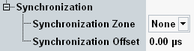

The parameters in this section configure the synchronization to other signaling applications.

Select the same synchronization zone in all signaling applications that you want to synchronize. "None" means that the application is not synchronized to other signaling applications.
Synchronizing signaling applications means synchronizing the used system time. It is useful, for example, for evaluation of message logs, because the time stamps in the logs are synchronized.
Synchronizing two GSM signaling applications means also synchronizing the used frame numbers.
The parameter is only configurable while the downlink signal is switched off.
Configures the timing offset at cell start, relative to the time zone.
Without offset, the cell signal starts with frame number 0 and a system time according to the time zone. With an offset, the cell starts with frame number 0 plus the offset and a system time according to the time zone plus the offset.
The parameter is only configurable while the downlink signal is switched off.